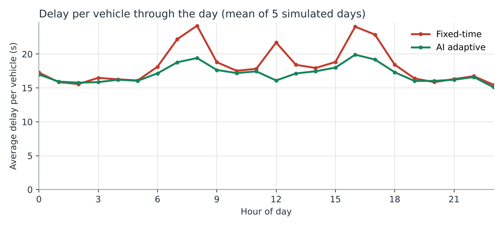
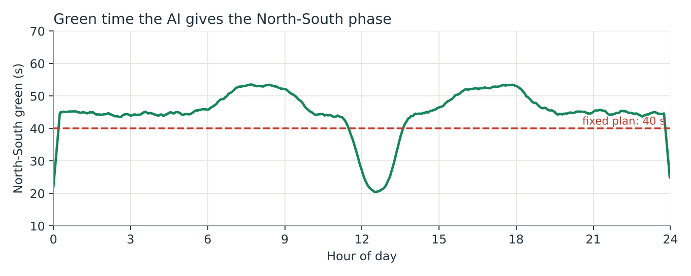
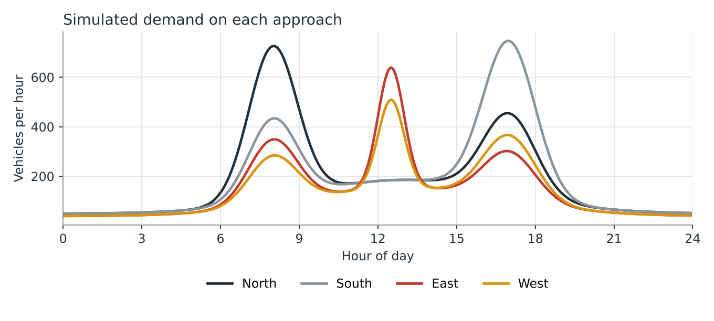
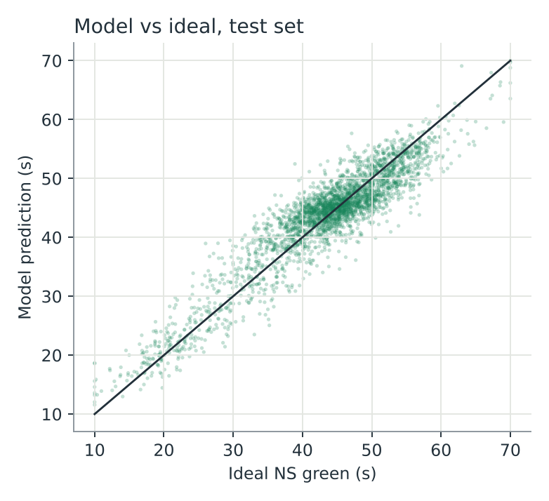

Results
Five simulated days, about 16,800 vehicles per day, with the same random arrivals given to each controller.
Controller comparison
| Controller | Avg delay per vehicle (s) | Peak-hour delay (s) | Longest queue (vehicles) | Mean queue per approach |
|---|
Delay is the average time a vehicle spends waiting in the queue, measured over the whole day (mean ± standard deviation across the five days). The "perfect information" row gives the labelling rule the exact volumes, so it shows how close the AI gets to the best this rule could do.


The demand that was simulated

How well the model learned the rule
On 3,000 held-out test rows, the model's recommendation is on average 2.8 s away from the ideal green time, compared with 8 s for always using 40 s. The coefficient of determination (R²) is 0.86. These test readings include sensor noise, which is why the fit is not perfect.
The gap to the "perfect information" controller in the table is small, which shows that the noise in the detector counts costs little once readings are smoothed.

Reproduce it
git clone https://github.com/kayrie18/intelligent-traffic-management.git cd intelligent-traffic-management pip install -r requirements.txt python run_all.py
This regenerates the datasets, retrains the model, reruns the simulation and rewrites the charts and website data in docs/.
Links
- GitHub repository
- https://github.com/kayrie18/intelligent-traffic-management
- Portfolio website
- https://kayrie18.github.io/intelligent-traffic-management/